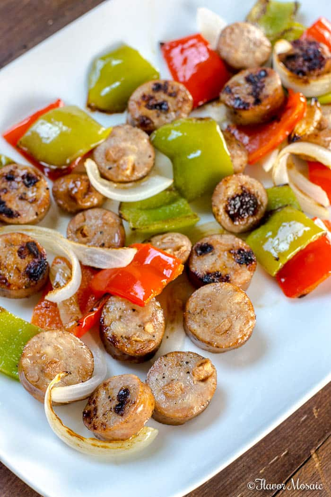

Sausage Peppers and Onions

- chicken sausage of your liking
- 1 white onion, sliced
- 1 green bell pepper
- 1 red bel pepper
- 2 TBSPs extra virgin olive oil
- 2-3 cloves of garlic
- fine salt
- ground black pepper
- Preheat oven to 400 degrees fahrenheit
- Meanwhile, slice onion, garlic, red and green bell peppers
- cut sausages into 1/2inch slices
- Place sausages, peppers, onions, and garlic into a foil lined sheet pan, drizzle with oil.
- Bake in oven for 10-15 minutes.
- Flip sausages and stir all the veggies
- Bake for another 10-15minutes
- Season to taste
- Enjoy!
Home